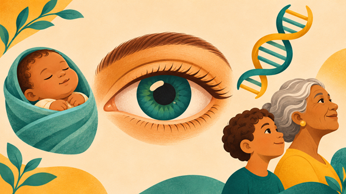

Quando a alteração visual começou? O que a causou? Os termos congênita e adquirida ajudam a responder à primeira pergunta. Já genética e hereditária ajudam a entender a causa e se ela foi transmitida na família. Deficiência visual congênita é aquela que está presente desde o nascimento, mesmo que só seja identificada mais tarde. Uma das possíveis causas é a catarata congênita, que pode ocorrer, por exemplo, quando há infecção por rubéola durante a gestação. Nesse caso, a alteração está presente ao nascer e tem origem infecciosa. Deficiência visual adquirida é aquela que surge depois do nascimento, na infância ou na vida adulta. Ela pode resultar de uma lesão ocular ou de uma doença. Um exemplo é a perda de visão causada pela retinopatia diabética, uma complicação do diabetes que afeta a retina. Deficiência visual de origem genética ocorre quando uma alteração nos genes ou nos cromossomos causa uma condição que afeta a visão. Essa alteração pode ser herdada dos pais ou surgir pela primeira vez na pessoa. Deficiência visual de origem hereditária está ligada a uma alteração genética transmitida dos pais para os filhos. Os sinais podem aparecer mais tarde. Por exemplo, em algumas formas hereditárias de retinose pigmentar, um dos primeiros sinais é a dificuldade para enxergar no escuro, que costuma surgir na infância. Esses termos podem se combinar. Uma pessoa pode nascer com uma alteração genética herdada e perceber a perda de visão anos depois. Por isso, ao falar de prevenção, é importante considerar a causa. Em alguns casos, é possível evitar a perda de visão. Em outros, o diagnóstico e o acompanhamento ajudam a orientar o tratamento, a reabilitação visual e a escolha de recursos de acessibilidade. Aviso para o site Este conteúdo tem caráter educativo e informativo. Ele não substitui uma consulta nem deve ser usado como orientação médica. Para esclarecer dúvidas sobre sua saúde ocular ou receber orientações individuais, procure um oftalmologista. Fontes consultadas Organização Mundial da Saúde (OMS). Condições congênitas (em inglês). https://www.who.int/news-room/fact-sheets/detail/birth-defects Ministério da Saúde. Síndrome da rubéola congênita. Fonte para o exemplo de catarata presente ao nascer. https://www.gov.br/saude/pt-br/assuntos/saude-de-a-a-z/s/sindrome-da-rubeola-congenita Ministério da Saúde. Retinopatia diabética. Fonte para o exemplo de perda de visão adquirida. https://www.gov.br/saude/pt-br/assuntos/pcdt/r/retinopatia-diabetica/view MedlinePlus Genetics. Retinose pigmentar (em inglês). Fonte para a explicação sobre alterações genéticas herdadas e alterações que surgem pela primeira vez na pessoa. https://www.medlineplus.gov/genetics/condition/retinitis-pigmentosa/ https://www.who.int/news-room/fact-sheets/detail/birth-defects